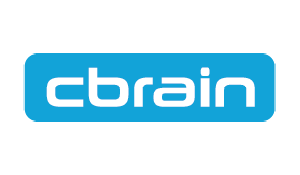
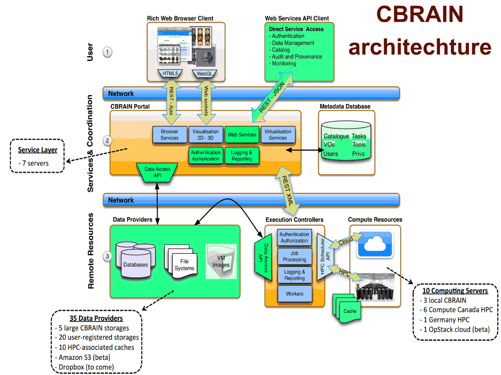
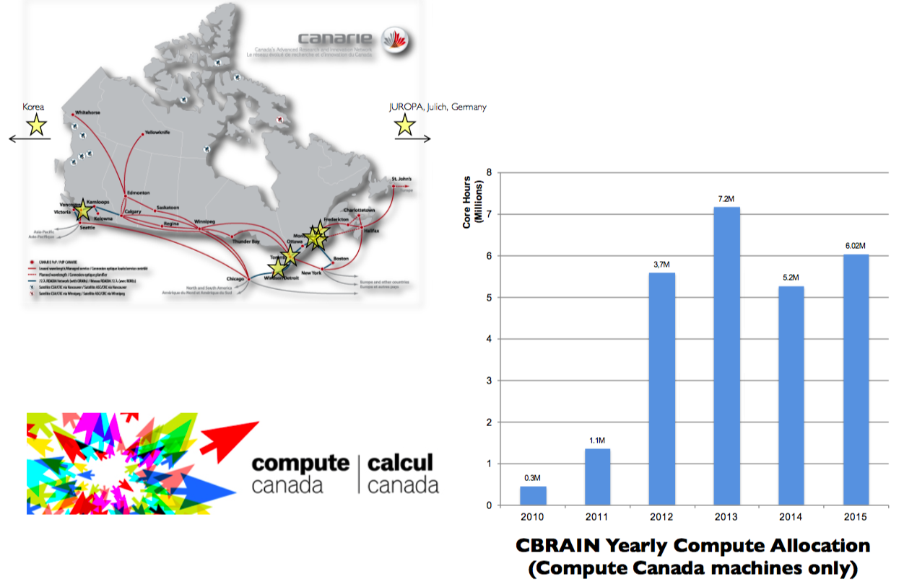
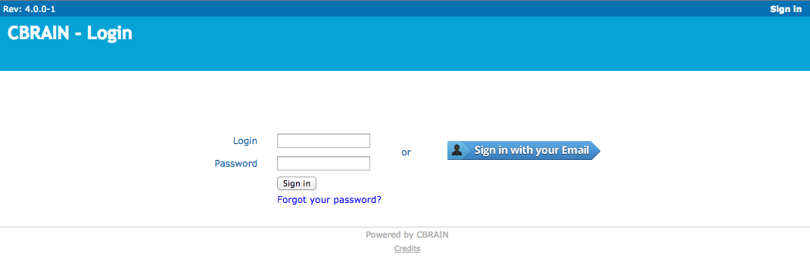
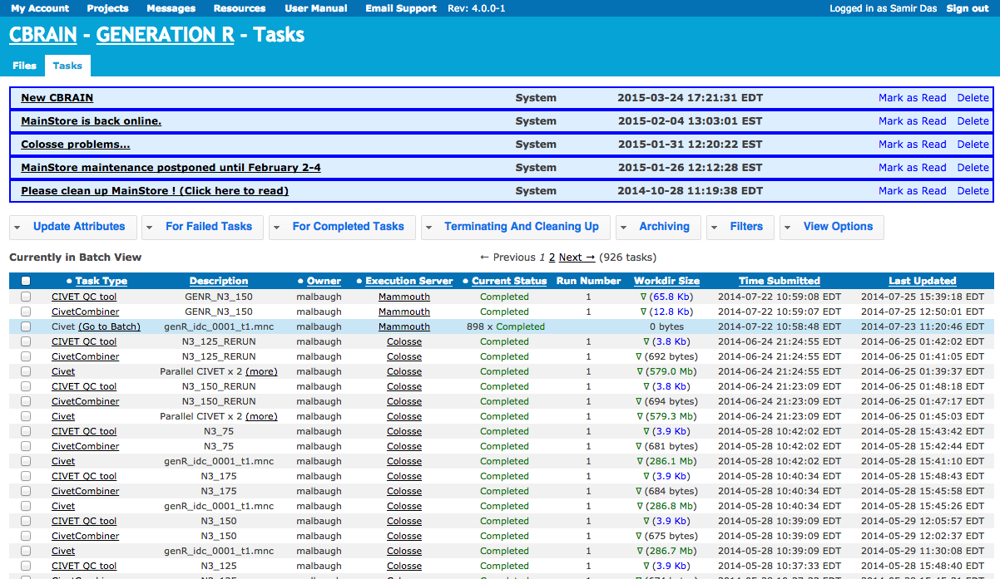

CBRAIN
LORIS
Big Brain
THE MNI ECOSYSTEM
Brain Browser
Open Science
Data Sharing
What’s involved?
Longitudinal acquisition, storage and curation,
Transfer, Anonymization, Security, Privacy, Ethics
Reproducbility, Interoperability, APIs,
Validation, Quality control, Protocol checking
Preprocessing, Analysis, HPC
Provenance, Ontological standarization, data harmonization
Upgrades, Maintenance, Bug fixes
User Interface, Javascript, Bootstrap
Tracking, Extensibility
Data management, Summary statistics,
Workflows, Development, Tool integration
Data sharing, download, multi-modal linking, querying
Image processing, Visualization,
Networking, System Administration
Partnerships, Funding and HR
...No big deal!
Data flow

WHAT IS CBRAIN?
|

“CBRAIN is web-based software that allows neuroimaging researchers to perform computationally intensive analyses on data by connecting them to High-Performance Computing (HPC) facilities across Canada and around the world.” “CBRAIN connects researchers to the tools and processing power required to handle the large neuroimaging datasets that have become the norm in the field.” |

|
CBRAIN SCHEMA
CBRAIN Computing Resources
CBRAIN portal

CIVET

NIAK

|
Web-based Collaborative research platform Access to remote sources Distributed high performance computing Processing and visualization tools Secure, controlled environment |
|
CBRAIN - Functionality
Non-expert users can easily leverage Compute Canada
Anyone can request an account (best effort support):
cbrain-support.mni@mcgill.ca
CBRAIN code is now public: https://github.com/aces/cbrain
Includes several structural and functional MRI tools
Continued integration of new tools as per community needs
CBRAIN - Tools
Conversion tools:
MINC ↔ NIfTI, DICOM → MINC, DICOM → NIfTI, Analyze → HRRT, ASPIRO → MINC, DICOM → HRRT, MINC1 ↔ MINC2
Image Processing tools:
- Civet, CivetCombiner & CivetQC
- FSL: bedpostx, bet, fast, feat, first flirt, melodic, probtrackx
- FreeSurfer: recon-all, and recon-all longitudinal
- NIAK
- Several other project specific tools
|
The CIVET project was initiated in order to create an automated, easy-to-use human brain-imaging pipeline that makes use of state-of-the-art software tools developed by researchers at the BIC for the fully-automated processing and analysis of large MR data sets, including the extraction and analysis of cortical surfaces from MR images, as well as many other volumetric and corticometric functions. 
|
Fully automated anatomical pipeline Parallel processing Can handle large datasets Includes QC mechanisms >10 yrs active development Publication in process |
|
|

|


|
fMRI Pipeline - NIAK
|
|

My name is Pierre Bellec... ... and I love fruit! |
CBRAIN portal
CBRAIN projects
CBRAIN tasks


|
The MINC file format and toolbox was originally conceived, written and released by Peter Neelin in 1992. |
Install MINC - BIC systems
By default binaries are available at /usr/local/mni
Better to use /usr/local/bic
A much more up-to-date version is installed in /ipl/quarantine/std/x86_64/1.0
To execute: source /ipl/quarantine/std/x86_64/1.0/init.csh
Install MINC - Personal computers
For personal computers (incl. Macs): https://www.mcgill.ca/bic/resources/minc/minctoolkit
Two versions are mentioned: 1.0 and 1.9.2: install 1.0 version, which includes all the standard MINC tools with support for MINC2.
Main difference: ITK-based software is also included.
MINC resources
- minc-users mailing list:
http://www.bic.mni.mcgill.ca/mailman/listinfo/minc-users - Current documention on wikibooks:
http://en.wikibooks.org/wiki/MINC - Current combined release:
http://www.bic.mni.mcgill.ca/ServicesSoftware/ServicesSoftwareMincToolKit - Github (for bug report and source code)
https://github.com/BIC-MNI/minc-toolkit/

Acknowledgments
Alan Evans, Alex Zijdenbos, Reza Adalat, Penelope Kostopoulos, Louis Collins, Vladimir Fonov, Marc Rousseau, Tarek Sherif, Pierre Rioux, Nic Kassis, Leigh MacIntyre, Claude Lepage, Ilana Leppert, Carolina Makowski, Natasha Beck, Tristan Glatard, Bert Vincent, Lindsay Lewis, Guiomar Niso, Elodie Portales-Casamar, Jeremy Moreau, Athena Buckthought, Alden Woodward, Reuka Giles, Kelvin Mok, Sylvain Milot, Jean Francois Malouin & Sylvain Baillet
LORIS Developers: Dario Vins, Jonathan Harlap, Matt Charlet, Andrew Corderey, Sebastien Muehlboeck, David Brownlee, Zia Mohaddes, David MacFarlane, Cecile Madjar, Mia Petkova, Christine Rogers, Rathi Gnanasekeran, Justin Kat, Nicolas Brossard, Tara Campbell, Jordan Stirling, Daniel Kroetz, Ted Strauss, Young-vin Nah, Shipra Agarwal, Pierre-Emmaunel, Martin Weiss, Ayan Sengupta, Olga Tsibulevskaya, Nicolas St. George, Justin Leong, Mathieu Desrosiers & Tom Beaudry